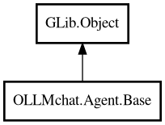

Base
Object Hierarchy:

Description:
public class Base : Object
Base handler for agent requests.
Created per message/request and manages the lifecycle of a single request. Wraps the client and handles signal relaying for that specific
request.
This is the default handler for simple agents (like JustAsk) that don't need special system message handling. For agents that need system
message regeneration (like CodeAssistant), use a specialized handler.
Content:
Creation methods:
Methods:
- public virtual async ArrayList<Message> execute_tools (ArrayList<ToolCall> tool_calls)
Executes all tool calls and returns tool reply messages.
- public virtual void handle_stream_chunk (string new_text, bool is_thinking, Chat response)
Called by Chat when a streaming chunk is received. Agent handler
should relay to Session.
- public virtual void handle_stream_started ()
Called by Chat when streaming starts. Agent handler should relay to
Session.
- public virtual void handle_tool_message (Message message)
Called by Chat when a tool sends a status message. Agent handler
should relay to Session.
- public void rebuild_tools ()
Rebuilds tools for this agent's Chat instance.
- public virtual async void send_async (Message message, Cancellable? cancellable = null) throws Error
Sends a Message object asynchronously with streaming support.
Signals:
- public signal void chat_send (Chat chat)
Signal emitted when a chat request is sent to the server.
- public signal void stream_chunk (string new_text, bool is_thinking, Chat response)
Signal emitted when a streaming chunk is received.
- public signal void stream_content (string new_text, Chat response)
Signal emitted when streaming content (not thinking) is received.
- public signal void stream_start ()
Signal emitted when streaming starts.
Fields:
- public Chat chat
Chat instance created in constructor and reused for all requests. Can
be updated if model, options, or other properties change.
- protected Connection connection
Connection for this request (obtained from manager.base_client).
- protected Factory factory
The factory that created this agent.
- public SessionBase session
Reference to Session for accessing Manager and tools (Phase 3: tools
stored on Manager).
Inherited Members:
All known members inherited from class GLib.Object
- @get
- @new
- @ref
- @set
- add_toggle_ref
- add_weak_pointer
- bind_property
- connect
- constructed
- disconnect
- dispose
- dup_data
- dup_qdata
- force_floating
- freeze_notify
- get_class
- get_data
- get_property
- get_qdata
- get_type
- getv
- interface_find_property
- interface_install_property
- interface_list_properties
- is_floating
- new_valist
- new_with_properties
- newv
- notify
- notify_property
- ref_count
- ref_sink
- remove_toggle_ref
- remove_weak_pointer
- replace_data
- replace_qdata
- set_data
- set_data_full
- set_property
- set_qdata
- set_qdata_full
- set_valist
- setv
- steal_data
- steal_qdata
- thaw_notify
- unref
- watch_closure
- weak_ref
- weak_unref